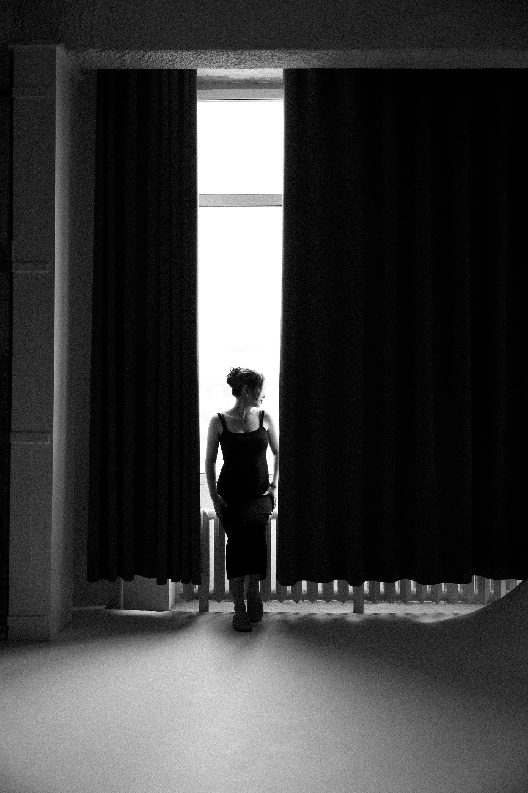
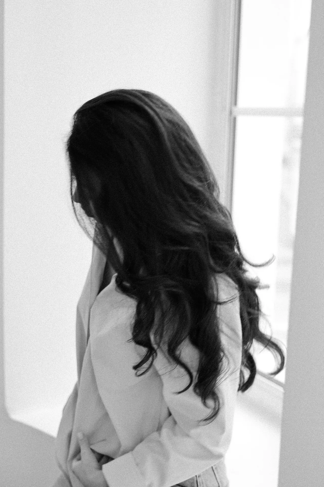
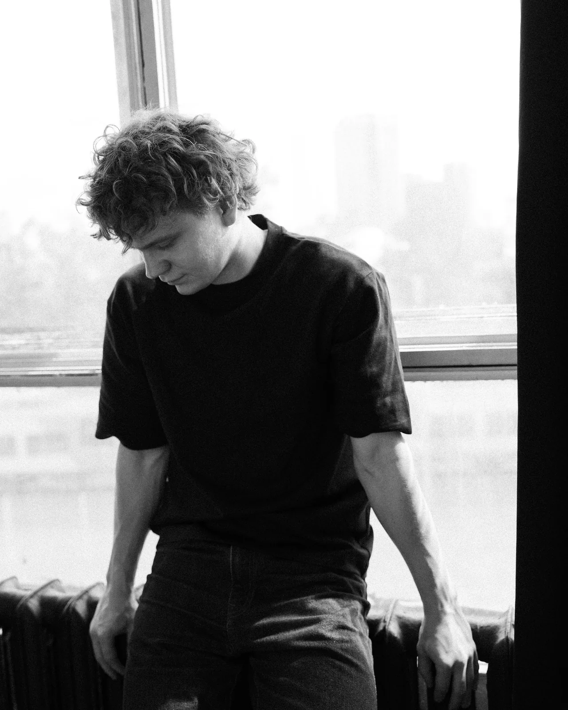

портрет
пропускаю через себя свет, тишину, чужие взгляды, случайные моменты
женский


как здорово, что можно узнавать себя по-новому каждый день




мужской



снежинки подсвечивались на тёмном фоне деревьев и домов

пропускаю через себя свет, тишину, чужие взгляды, случайные моменты
как здорово, что можно узнавать себя по-новому каждый день


снежинки подсвечивались на тёмном фоне деревьев и домов